O Código da Vinci
Início
Categorias
Sobre nós
Contato
Laboratório 8
Codificacao de Voz e Audio
Separacao de uma estrofe
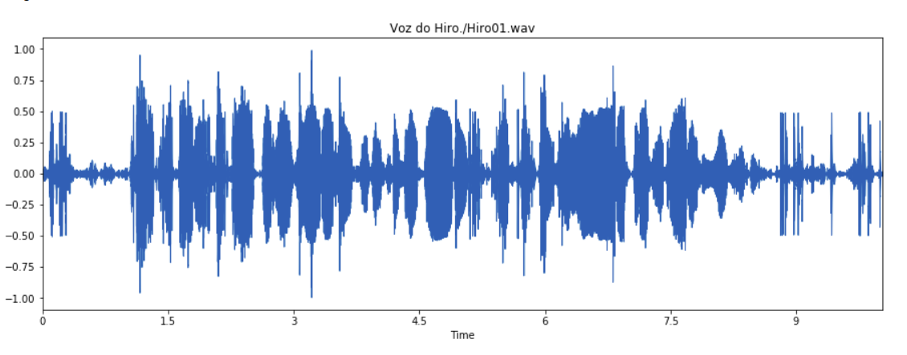
Janela Hamming
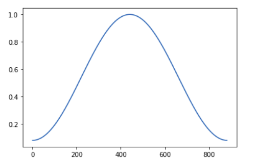
Primeira Estrofe
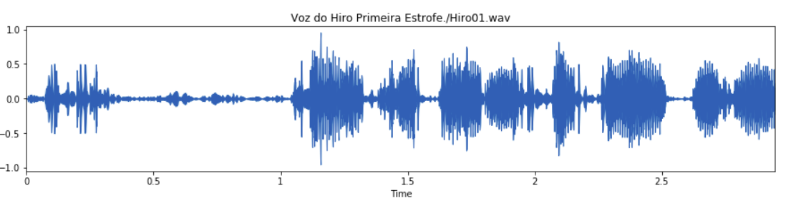
Cálculo dos Parâmetros LPC, separação U/UV e Espectro + Envoltória LPC
Energia Primeira Estrofe
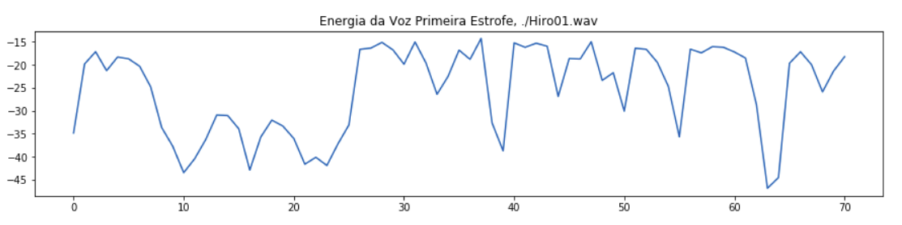
Segmentos Sonoros
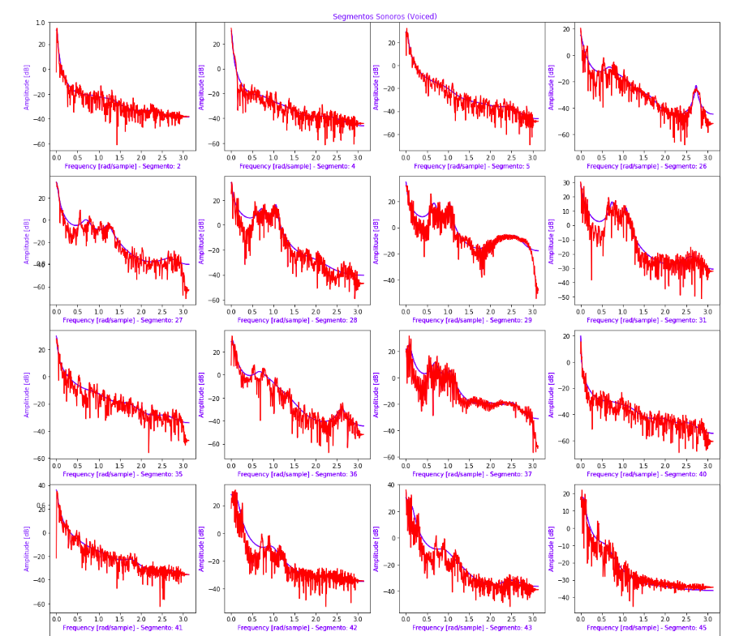
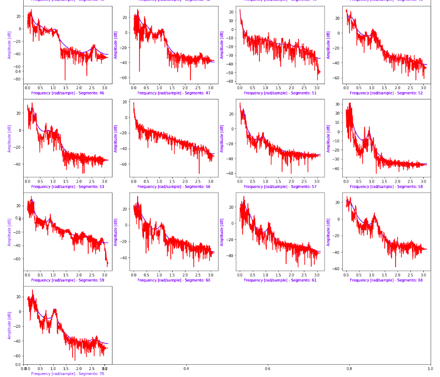
Segmentos Surdos
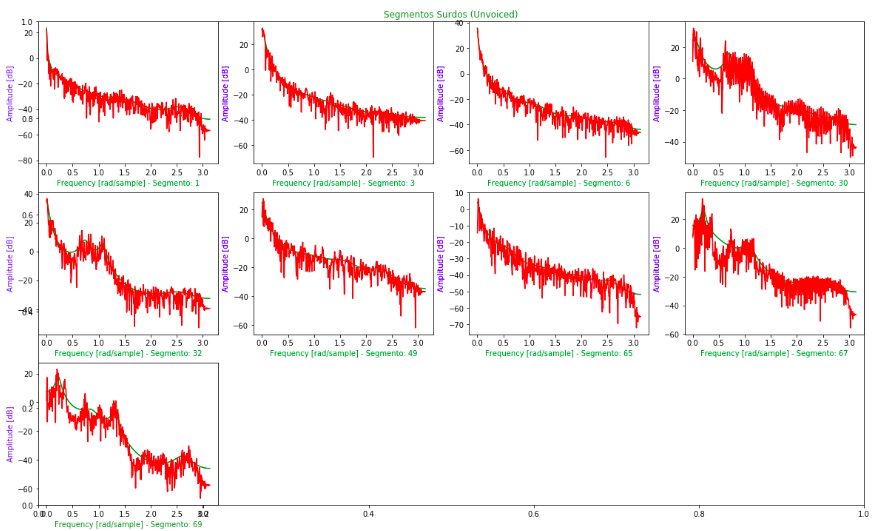
Voz Cantada
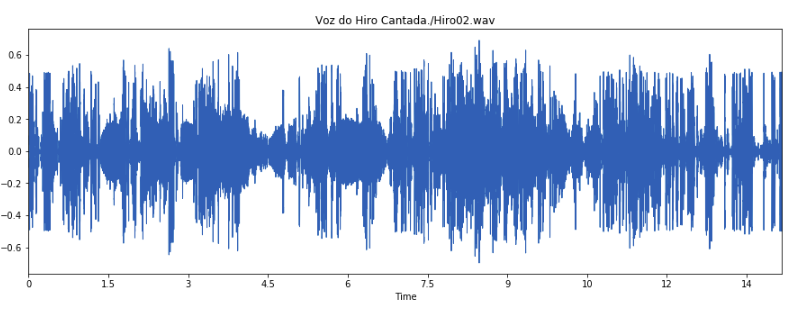
Cantada de inicio
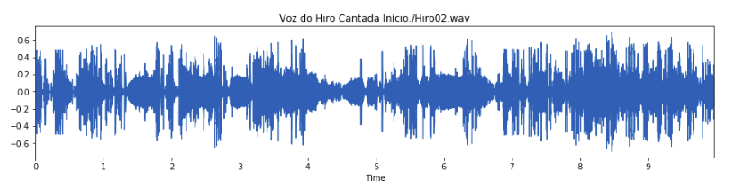
Cálculo dos Parâmetros LPC, separação U/UV e Espectro + Envoltória LPC
Energia Primeira Estrofe
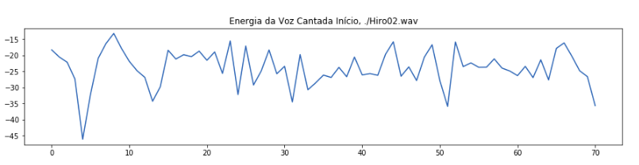
Segmentos Sonoros
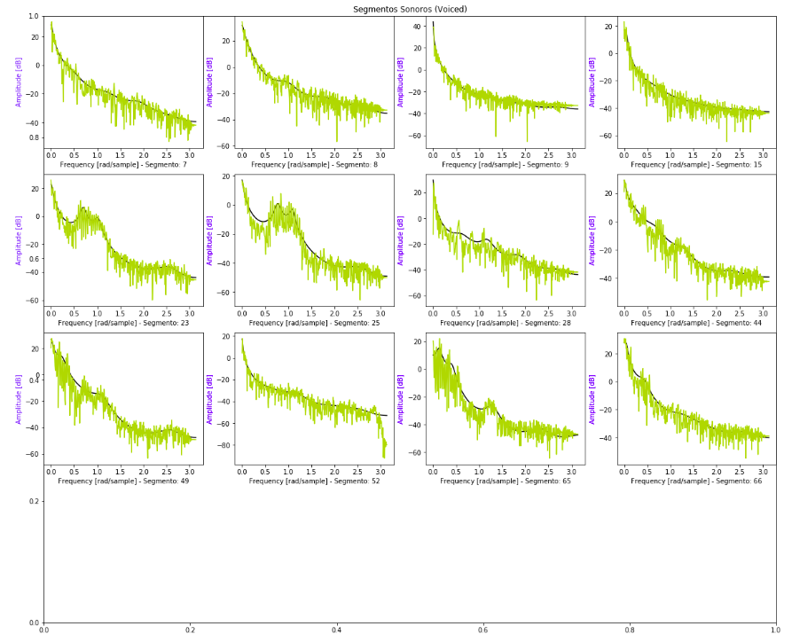
Segmentos Surdos
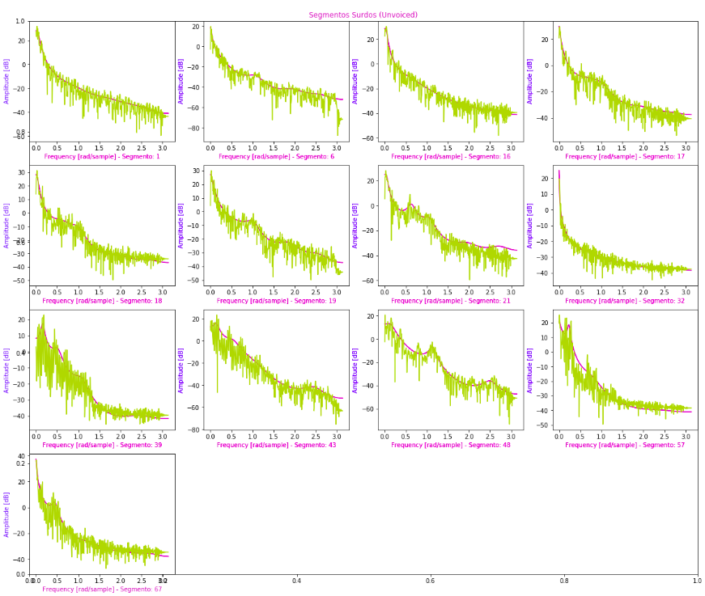
Espectrograma equivalente 32kbps
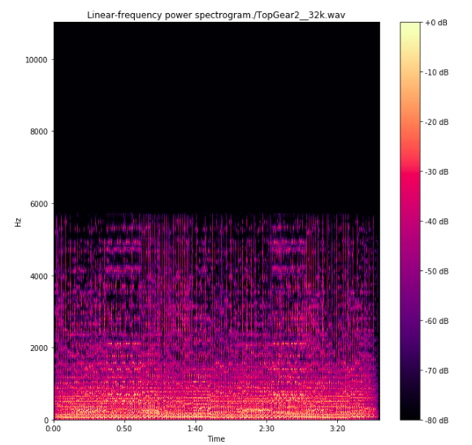
Espectrograma equivalente 128kbps
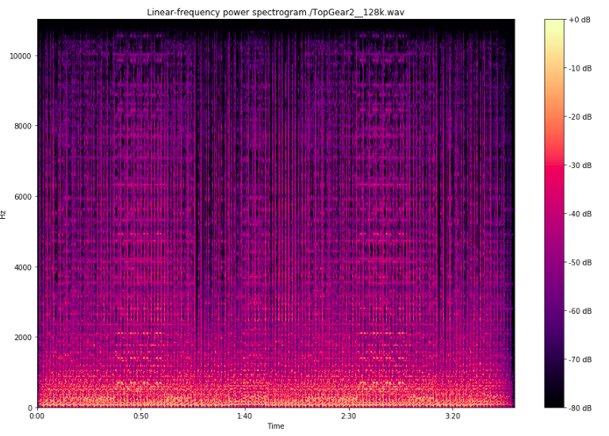
Espectrograma equivalente 360kbps
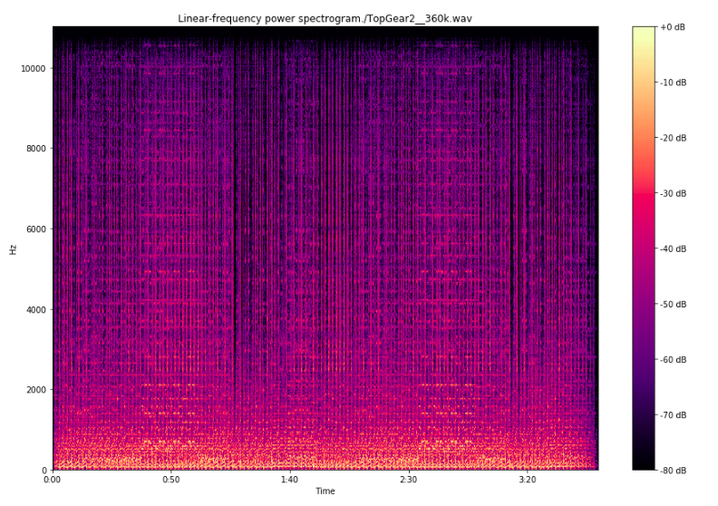